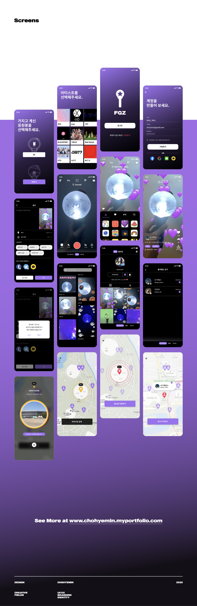
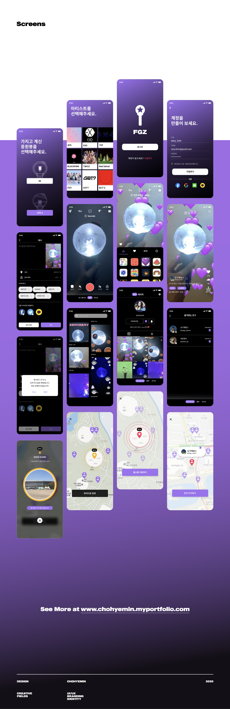

FeelGoodz
조혜민
https://chohyemin.myportfolio.com/
전 세계적인 사랑을 받고 있는 K–pop.
오프라인 콘서트를 갔을 때, 굿즈를 사고 나면 콘서트 시작 전까지 시간이 붕 떴던 경험이 있지 않나요?
혹은 커스텀을 하고 싶어도 부담스러운 가격으로 인해 마음을 접었던 적은 없으셨나요?
K–pop 콘서트와 굿즈를 부담없이 더 즐길 수 있도록.
팬들이 가장 좋아하고 관심 갖는 굿즈인 응원봉을, AR을 활용해 가상 커스텀 할 수 있도록 도와주는 공간.
K–pop 팬들의 더 큰 즐거움과 만족도를 위해 기획된 애플리케이션,
FeelGoodz입니다.
The universal syndrome of K–pop.
After buying official goods, haven't you experienced to have time on your hands before the concert?
Or have you ever given up customizing it because of the burdensome price?
To enjoy K–pop concerts and goods more without any burden.
A service to help virtual customizing cheer sticks, one of the most used and preferred goods for K–pop fans.
An application designed for greater enjoyment and satisfaction of K–pop,
It is FeelGoodz.